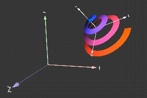
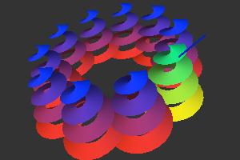
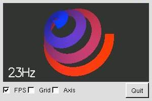
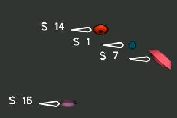
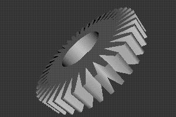
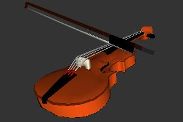

libQGLViewer examples
Introduction
Many pedagogical examples illustrate some functionalities of the viewer and are provided for
understanding and cut and paste. New users should read the introduction
page and the commented example to understand the philosophy of
the library. One should then test the following basic examples :
Basic examples

simpleViewer
The simplest application example: 20 lines of code and yet all the power !
|

manipulatedFrame
A ManipulatedFrame can be moved with the mouse in the scene.
|

select
Selection of objects of the scene using select() and an OpenGL GL_SELECT render mode.
|

keyboardAndMouse
Shows how to customize your keyboard and mouse bindings.
|
|
Pedagogical examples
animation
The animate() function illustrated by a water particle simulation.
|

callback
Using the Qt signal-slot mechanism to connect a QGLViewer and your scene.
|

constrainedCamera
Constraints applied on the Camera Frame to limit its translation and/or rotation.
|

constrainedFrame
Constraints can limit the translation and/or rotation of a (Manipulated)Frame.
|

drawLight
The drawLight() function is a light debugging tool.
|

fastDraw
The fastDraw() function keeps interactivity even with large scenes.
|

frameTransform
Coordinate transformation between different Frames.
|

interface
Adding a graphical user interface around a QGLViewer.
|
keyFrames
The KeyFrameInterpolator test example.
|

luxo
A more complex exemple that combines ManipulatedFrames, selection and constraints.
|

mouseGrabber
Illustration of the MouseGrabber class.
|

multiView
A multi-view application, with constrained camera displacements.
|

screenCoordSystem
A saucers control viewer that illustrates the screen coordinate system feature.
|

spinningFrame
Illustration of the SpinningFrame class.
|
stereoViewer
Simply press S to toggle stereo display (architecture dependent).
|
textureViewer
Loads image files and textures map polygons with it.
|
|
|
|
More complex examples

3dsViewer
The LGPL lib3ds library is used to load and display a 3ds scene.
|
agora
Implementation of the game of Agora.
|

x3dViewer
The X3DToolkit library is used to load and display a x3d scene.
|
quarto
A simulation of the game of Quarto.
|
draw3DText
An icosahedron is used to illustrate the draw3DText() function.
|
|
|
Compilation

 If you installed the RPM, the examples' source files are in
If you installed the RPM, the examples' source files are in /usr/share/doc/QGLViewer/examples and you
have to copy the desired example(s) directories to a place where you have write permission.
If you have downloaded the archive instead, simply go to the examples directory.
Use the following code to compile all the examples (can also be done in a specific example directory
to compile only this example) :
> cd examples
> qmake [INCLUDE_DIR=...] [LIB_DIR=...]
> make
The optional INCLUDE_DIR and LIB_DIR parameters are needed if you
customized your make install. Use qmake
INCLUDE_DIR=../.. LIB_DIR=../../QGLViewer if you didn't "install" the library.
You may prompted an "error while loading shared libraries" message when trying to
execute an example. In that case, you probably forgot to add the directory of the library to your
default library path. On unix, this is done like this (on SGI IRIX, replace
LD_LIBRARY_PATH by LD_LIBRARYN32_PATH):
[bash] > export LD_LIBRARY_PATH=${LD_LIBRARY_PATH}:/Path/To/QGLViewer/lib
[tcsh] > setenv LD_LIBRARY_PATH ${LD_LIBRARY_PATH}:/Path/To/QGLViewer/lib
 Windows users have to compile each example separately, using the Open (or Generate) Qt project icon.
Windows users have to compile each example separately, using the Open (or Generate) Qt project icon.
Add the path to libQGLViewer-version to your
Project-QGLViewer properties-C/C++-General-Additional Include Directories
(Tools-Options-Directories-include files with MSVS 6.0).
Add the path to libQGLViewer-version\QGLViewer to your
Linker-General-Additional Library Directories
(Tools-Options-Directories-Library files with MSVS 6.0).
Qt 2.3 users have to edit the examples .pro files
as is detailed in these files.

 Last modified on Friday, April 30, 2004.
Last modified on Friday, April 30, 2004.